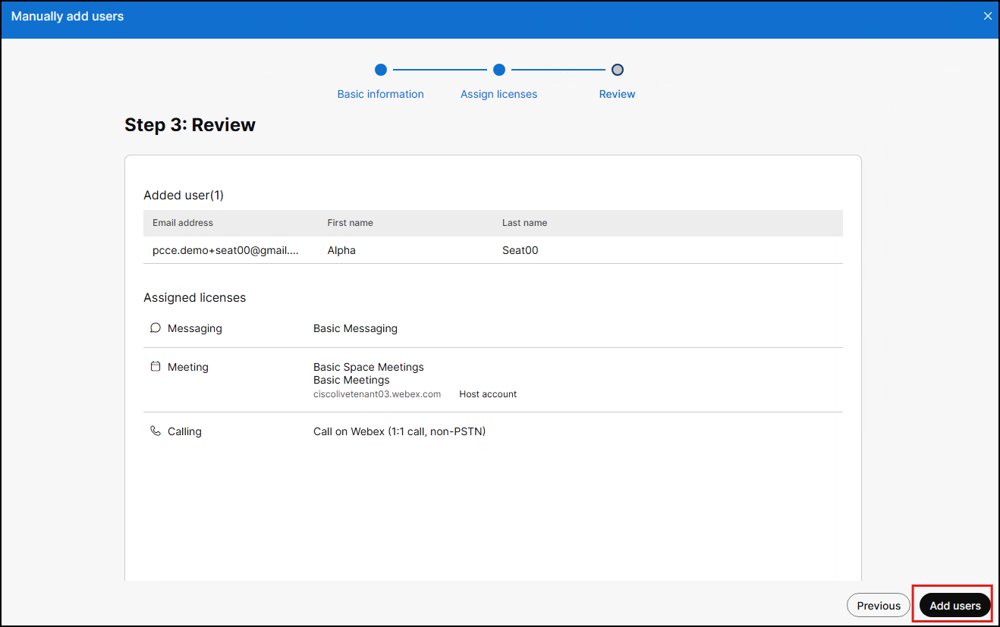
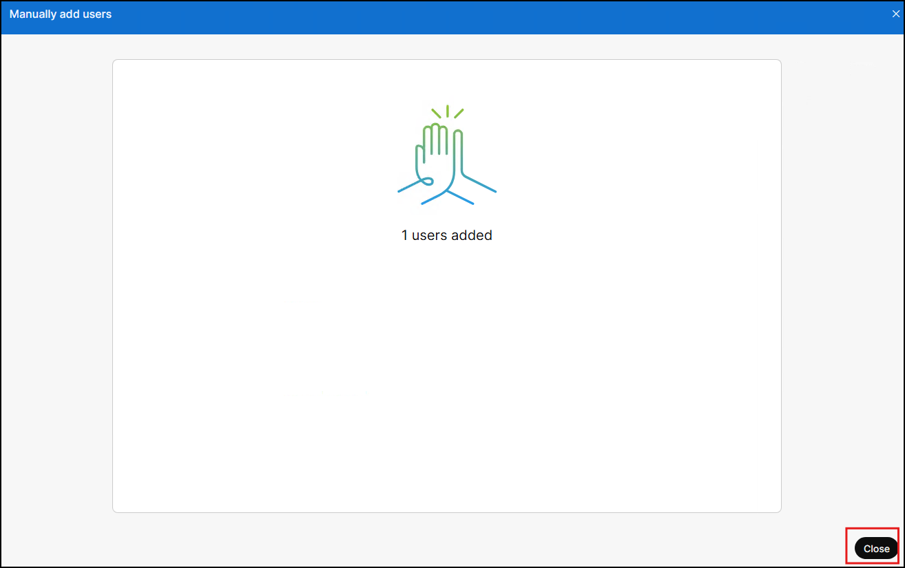
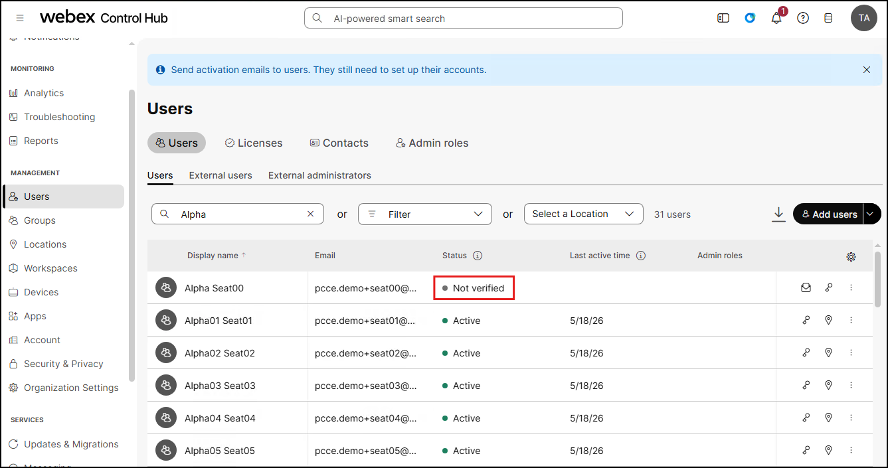
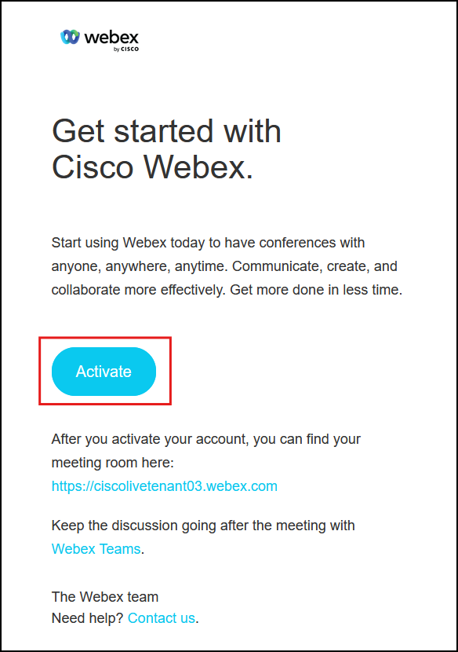
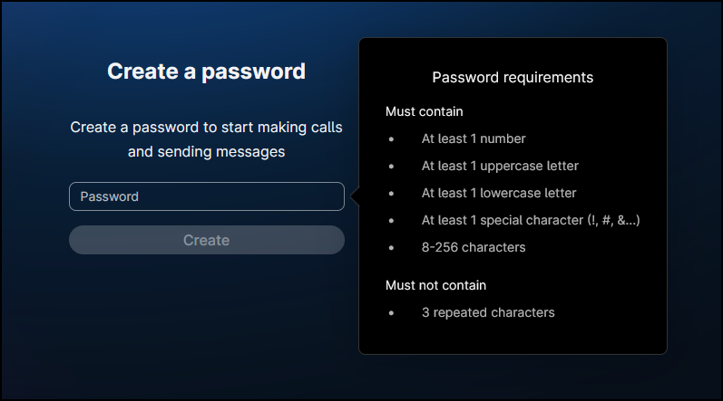
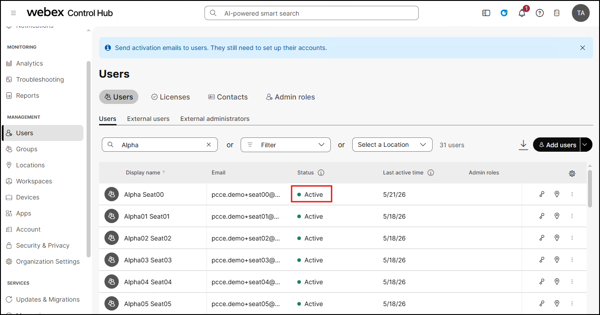

Lab 2 - Configure and Import your Webex CI User
Objectives
In this lab you will:
- Know how to create a user on Control Hub and add them to the PCCE synced Group.
- Know how to configure your PCCE deployment for periodic/manual sync with the Control Hub
- Know how to import users into CCE as Webex CI users.
- Know how to configure an imported Webex CI user as an Agent on CCE.
What are the prerequisites for Webex Common Identity(CI)?
- Install ICM_ES202511 or later.
- Order for Webex Common Identity is placed on Cisco Commerce Workspace (CCW).
- Install Cloud Connect ES202511 COP or later.
- Cloud Connect is added to Inventory and registered on Webex Control Hub.
- Install Cisco Finesse 15.0(1) SU1 or later.
- Webex CI endpoints is enabled in your proxy settings. See CCE 15.0 Security Guide.
Task 1. Create users on Webex Control Hub
Step 1: On WKSTN1, using Chrome log into Webex Control Hub - admin.webex.com - using the credentials below:
- Username: CiscoWxConnect2+tenant03@gmail.com
- Password: CXNativeAI2025!
{kind=link}
Step 2: Read Only From the left-side menu, navigate to Users -> and click on the Add Users button.
{kind=link}
Step 3: Read Only Enter in the First Name, Last Name, Email Address and then click Next. Note: You cannot add existing users in your organization or users that already have a Webex account.
{kind=link}
Step 4: Read Only Click Next in the Assign license for users page
{kind=link}
Step 5: Read Only In the Review page, review the details and click the Add Users button. At this point the User is successfully created on Control Hub with a status of Not Verified.
  
{kind=link}
{kind=link}
{kind=link}
Step 6: Read Only Verify the user using the Activation email sent to the email id entered and set the password. The status on Control Hub will now show Active for the user account added.
  
{kind=link}
{kind=link}
{kind=link}
Step 7: Read Only Click on the created user account on Control Hub; and under the Summary tab, find the Groups section and click on Add to Webex groups.
{kind=link}
Step 8: Read Only Next, select PCCE Users group -> Save.
What are these Webex groups seen in the drop-down?
• When an Org is created in a PCCE solution, a PCCE Users group is created automatically by the System.
• When an Org is created in a UCCE solution, a UCCE Users group is created automatically by the System.
• Similarly, for a WxCCE solution, a WxCCE Users group is created automatically by the System.
{kind=link}
{kind=link}
Task 2. Import Users into CCE
Step 1: On WKSTN1, using Chrome log into the CCEAdmin page - ccedata.dcloud.cisco.com/cceadmin - using the credentials below.
- Username: administrator@dcloud.cisco.com
- Password: C1sco12345
{kind=link}
Step 2: Read Only Navigate to Features -> Single Sign-On -> click on the Webex Common Identity tab.Under the Configuration tab, you have option to enable auto-sync and/or perform a manual sync on demand.
- Using the Auto/Periodic Sync or the Manual Sync, the users created on Control Hub & added to the PCCE Users group will be imported into CCE.
{kind=link}
{kind=link}
Webex CI Configuration Fields and their descriptions
Last Sync: Displays the timestamp of the latest sync and sync completion status.
Sync Details: Displays number of Webex CI users synced from Common Identity to the CCE database.
- Created: Number of newly synced Webex CI users.
- Updated: Number of existing Webex CI users whose information is updated.
- Failed: Number of Webex CI users that failed to sync. You can click “Failed” to see the list of failed users that are not synced to the CCE database.
Current Sync Status: Displays the sync status, whether the sync is in progress or scheduled.
Enable Sync: Switch the toggle ON to enable Periodic / Auto sync. To disable Periodic / Auto sync, toggle this option OFF.
Frequency: Displays the defined timestamp at which the Webex CI users sync must occur. 30mins is the default timestamp.
- All day: Select the All day radio button to sync users every day.
- Custom: Select the Custom radio button to sync users based on the required start and end time on the From and To fields.
Manual Sync: Click Sync Now to trigger the manual sync process. This can be triggered at any point when the Enable Sync option is enabled.
NOTE: Sync Now button is available only when Enable Sync button is turned ON. Manual Sync is disabled during an active automatic sync.
Step 3: Read Only To view the list of users successfully imported, click on the Users tab.
{kind=link}
Task 3. Configure the imported Users as Agents in CCE
Step 1: Now, navigate to Users -> Agents and click on the New button to add the imported user as an Agent on CCE.
{kind=link}
Step 2: On the New Agent configuration page:
a. Uncheck the Set Password option. Note: Ensure to clear out the Auto-Filled entries.
b. Check the Enable SSO box and select Webex Common Identity radio button.
c. Search for your Agent name - in this case, enter your seat number - example seat00.
- This will then auto populate the Username, First Name and Last Name fields.
{kind=link}
{kind=link}
d. Next, assign the agent to the Webex_AI_Team team.
e. Set the Desk Settings as UWFDeskSettings.
{kind=link}
f. Under the Attributes tab, add the attribute CumulusInbound and set the value as 5 or higher.
{kind=link}
g. Now, click the Contact Center AI tab and select the following features and the click Save.
- Virtual Agent Transcript
- Call transcript
- Virtual agent transfer summaries
- Real-time Assist
- Wrap-up summaries
{kind=link}
Task 4. Review Agent Desk Setting and assign Wrap-Up reason to the Agent Team
What's the purpose of this task?
- Wrap-up Summary requires Wrap-up to be set to Required or Required with wrap-up data.
- When Wrap-up is set to Required or Required with wrap-up data, at least 1 wrap-up reason must be assigned to the team.
Step 1: Navigate to Desktop -> Desk Settings -> Select the Desk Setting UWFDeskSettings
- Ensure the parameters Wrap-up on Incoming and Wrap-up on Outgoing are both set to Required.
{kind=link}
{kind=link}
Step 2: Lastly, navigate to Organization -> Teams -> Select the team Webex_AI_Team.
{kind=link}
{kind=link}
Step 3: Select the Team Resources tab -> Wrap-up Reasons -> add at least one Wrap-Up Reason -> and click Save.
{kind=link}
This now completes Lab 2!